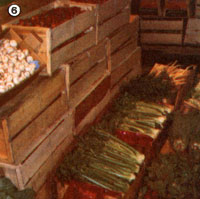

A "New Wave" of grocery outlets can give you more control over what you eat and how much it costs you.
STATEMENT I. Food co-ops are consumer-owned businesses run by people who band together to buy food.
STATEMENT II. There are lots of 'em.
You've just read the only two food co-op generalizations that are indisputably true. There are, indeed, a great number-over 3,000 in the U.S.-of groups who have organized to procure their own food. Beyond that, though, the "movement" is as diversified as are the various types of food. Folks may form "vittle fellowships" to obtain groceries inexpensively (co-op members often save from 15 to 50% on food items!) . . . to secure healthful, wholistically grown eats . . . to practice participatory democracy as a first step in taking political control of their own lives . .. to share and experience cooperation . . . or for some combination of such goals. Food co-ops can be as small as the four-family Morgan City Buying Club in Louisiana and as large as California's 96,000-member Consumer Coop of Berkeley. And "chow coalitions" may be called anything from Organized Hunger (in Oregon) and People's Intergalactic (in North Carolina) to just plain Co-op (in lots of places).
The reason for this diversity is simply that food co-ops are consumer owned. Their guiding purpose is Food for People, Not for Profit. And that motto also describes the basic advantage of participating in a food co-op: The members themselves create, shape, and regulate their organization.
As a result of this membership control, each individual co-op becomes its own unique food-buying institution. Take a look at some thriving "larder lodges" from Pennsylvania to Oklahoma, and you'll get a sense of what you yourself can create. You'll also see why co-ops have become such a booming people's movement.
Housed in an "improving urban area" (that is, a former slum) of Atlanta, Sevenanda is perhaps the largest food co-op in the southeastern United States. The store provides over 4,000 weekly shoppers with an amazing array of victuals. A long walkin cooler displays 85 kinds of produce . . . other sections of the store offer a seemingly unlimited array of grains, nuts, oils, juices, vitamins, and cheeses (even a grind-your-own peanut butter machine) . . . while one special corner contains a collection of over 100 jarred herbs and smells like the distilled essence of 1,000 flower shops.
Furthermore, the co-op's customers are just as varied as are its products. A regular collage of shoppers browse and squeeze, sniff and weigh: a policewoman on lunch break . . . a businessman seeking granola . . . an older gentleman eyeballing a bag of tempeh ... a toddler with her hand in the almond drawer . . . an elderly black woman selecting over $18 worth of various herbs ("My mother gathered some of these in the woods back when I was a little girl") ... and a young jogger who claims to have been nudged into eating healthful foods by the Holy Spirit. All eventually queue up before one of the two cashiers, either the young mother who's a putting in volunteer work time or the longtressed fellow (a paid staff member) who holds his co-checker's daughter on his lap while he rings up totals and offers advice to the shoppers.
And while the buyers and volunteers work on their friendly yet focused errands, the co-op's collective staffers fill in the gaps and keep the store running smoothly. Cathy, for one, restocks produce shelves and explains why it's important to carry organic as well as nonorganic produce: "There's a real difference ... folks who 'fast' on our nonorganic grapes get sick from the pesticide residue, while those who eat only organic fruits feel fine."
Mike-another staff member-takes a break from his record-keeping figurework to describe the purpose of Sevenanda: "We try to provide good food to anyone who wants it, member or nonmember." The co-op accomplishes this goal equitably-by using four buying scales: 20% off list price for members who work three hours a week in the store, 10% off for those who put in three hours a month, list price for dues-paying but nonworking members, and a 10% surcharge for off the street shoppers. Thus the hardest working"co-opers" can buy almost at cost, while even nonmembers reap some savings.
Sevenanda's service (the unusual name is Sanskrit for "Service is Blessedness") has affected the surrounding community as well. The entire area has taken the store as a nexus and is on the upswing. People are moving back into the area, and several new businesses-with names like C.W. Sprouting, New Leaf Book Distributors, and Dave's Bread-have sprung up. As Mike says, "We're a people exchange as well as a food and money exchange."
But the group's success didn't come easy. Unlike most working co-ops, Sevenanda was formed on a nondemocratic basis. An eastern religious community Ananda Marga founded the food store as a health service project. When-just one year ago-the growing community consciousness of some of the members clashed with the external control policies of the "parent" group, Sevenanda was caught in the agony of a coop crisis. The split had to be resolved in court . . . eventually the governing board disbanded itself and-for the first time in Sevenanda's history-the co-op held elections.
The store's staffers have also had to abandon a lot of their "New Age naivete" for some realistic business practices. This meant, for example, improving their accounting system (after redoing two years' worth of records for the IRS) and prosecuting-rather than forgiving-any shoplifters.
Such problems serve to demonstrate why co-ops have to change as they expand. Not all groups survive their growth pangs. But Sevenanda has made it . . . in style. In fact, the food store has just launched a separate whole food warehouse-Magnolia-that's delivering good food at good prices to co-op customers throughout the Southeast.
While Sevenanda was founded on the ideals of nutritional and spiritual service, Weaver's Way-a prosperous middleclass food co-op in Philadelphia-was established solely to provide bargains. Jules Timmerman, Weaver's founder, created a moneysaving members-only food store through a lot of dedication . . . an ability to corral new membership fees to cover ongoing debts . . . and an amazing talent for finding suppliers of inexpensive food. At first, co=op members didn't have to work (a small paid staff ran the store), but simply handed in a $10 admission fee and started shopping. Weaver's Way quickly gained a booming enrollment.
Eventually, though-when Timmerman made a unilateral decision to buy a new building for the co-op-the store's members became disgruntled, elected a governing board, and gained full democratic control. This changeover involved incorporating, writing by-laws, straightening out the financial records, hiring a new manager . . . and, finally-after three torturous "monster meetings"-facing the need for a mandatory work requirement.
"The board passed the work policy just in time," says Norman Weiss, the co-op's current manager. "We'd recently gone through a terrible summer slump and had less than $1,000 in the bank. We started that fall with just a few short worker slots, but now we use 44 man-hours of nonpaid help in the store-for everything from cutting meat to sawing floor boards-every day!"
And just about the most impressive aspect of the Weaver's Way operation is the success of its work program. Every one of the store's 1,500 members shares the labor! Paid employees still tally the books, run the cash register, manage the traffic, and make 4:00 a.m. fresh produce runs each morning, but the input from the "cooperators" (these folks don't call themselves "volunteers") is crucial to the store's success.
Weaver's accomplishes this democratization of labor with a simple yet effective record system. If a person hasn't put in the required time (six hours a year for single adults) by the second month of his or her assigned three-month cycle, a green star is put on that member's shopping ledger card. The cashier then sees to it that the laggard signs up for work and adds a second ("you've been told") green star to the ledger sheet. If the reluctant co-oper then fails to help at the agreed upon time, the green stars are replaced by a red one and the nonlaborer can't shop . . . until he or she does work.
Weaver's Way has become democratic in other ways, too. In fact, the shoppers' organization has fully incorporated all four principles (open 'membership, one-member-one-vote, limited interest on investment shares, and profits redistributed to members) of their namesake group . . . the original consumers' cooperative of weavers in Rochdale, England. At the end of the year, the store's profits are redistributed to the members through a patronage rebate system, and the membership as a whole decides whether to take the entire rebate as cash or reinvest a percentage into the coop.
All in all, the organization has evolved-in just seven years-from a loosely run bargain hunter's club to 'a sophisticated food store that consciously embodies the principles of cooperation. "The whole thing for me is consumer control," Norman says. "Ideally, the people who use things will someday work their way back so that they control the entire production industry."
Until that day, it looks like Weaver's Way will keep doing just fine on its own. The coop has just decided-by full membership vote this time-to move to a new store and double in size.
Most food co-ops are not such prosperous, large-scale institutions as Sevenanda and Weaver's Way. Many serve smaller groups of people out of part-time storefronts. Take for instance the Tahlequah Foods Co-op. This Oklahoma operation is made up of a self-described "scratching to get by" membership . . . in a town so rural that bears occasionally stroll down Main Street.
Lance Hughes, a long-term member, describes how the co-op-after a couple of false starts-first got its own store . . . the abandoned Cherokee Supreme Court Building. "It was a beautiful old brick structure that we were able to use rent-free. We stayed there all summer, and our membership bloomed. But by that autumn - since the place had termites and its 15foothigh ceilings meant we'd be facing a whopping winter heating bill-we had to start looking for another location.
"We found a newer storefront that looked just fine, but the building had a $100-amonth rent bill ... and our members had voted not to move if it meant increasing expenses.
"Well, a few of us liked that new building a lot and figured that-at the rate we were growing-we'd soon have enough folks to pay the rent . . . so we went ahead and moved anyway. That was our biggest mistake. A lot of people resented being left out of the decision, and others didn't like shopping-or working-at the new location. So before long our prosperous 300-plus membership had dwindled to around 87. And we still had all the 'new' bills to pay! We damn near lost the whole co-op."
Today the Tahlequah Foods Co-op has moved to yet another storefront . . . this time a smaller, more practical building. And, rather than wearing out the dedication of volunteers by trying to keep the storefront operating all the time ("We've gone through members the way most coops go through food," Lance says), the store is only officially open when someone signs up to run it. Otherwise, if a person wants to shop, he or she simply gets the key (kept in a not-too-secret spot), opens the market, shops, writes out a bill, tallies it up, puts the payment in the cash drawer, locks up, and leaves.
The co-op's membership is once again growing, but slowly this time. "We're nickel-and-diming it here," admits Lance. "It's difficult-every month-to get the money to place a new food order. We have to wait until the co-op gets back the money it invested in the last shipment . . . and by that time the shelves are just about so bare nobody can shop here."
Volunteer help seems to be a marginal operation, as well. Only 10 to 15 of the 150 members earn the 15% worker's discount each month. "If you try to force people to participate," Lance says, "you just make them feel guilty . . . and before long they leave the co-op. Most folks around here work pretty hard just to get by. They have to worry about doing things for their own rather than the co-op's -survival."
Yet-in spite of the store's difficulties with volunteer help, cash flow, and food supplies the Tahlequah Foods Co-op has been able to "keep on keeping on". Members can save money on whole foods and take some control over their grocery-buying lives . . . the store's honor system works amazingly well .. . and-most important-a small but active cooperative community does exist. Enough trustworthy folk show up to make the needed cheese-cutting tool, find a gravel source for the potholed parking lot, participate in the meetings ("We use your run-of-the-mill democratic process"), and handle the store's daily needs so that the coop can continue to function.
"I don't recommend running a co-op the way we do," Lance confesses, "but it's right for the members we have."
The simplest, most economical, and perhaps most truly "cooperative" manifestation of the fast-growing food co-op movement is the small buying club. Such organizations are almost "invisible coops" ... because they don't operate a storefront at all! Instead, the clubs consist of groups of people (sometimes as small as four families) who pool funds so that they can buy food in quantity. When their supplies arrive, the members divvy up the booty at a mutually agreed-upon location and then tromp off to their homes . . . until they're ready to get together and place another order.
The Burnsville Food Co-op in the mountains of western North Carolina is an example of one young but growing buying club. BFC got off to a slow start last winter because heavy snowstorms kept the six original member families from getting together often. But the club has grown rapidly since "thaw time", and now numbers 19 member families.
The food ring's cooperative structure has also grown. "When we first got started, three of us were doing most of the work," says member Susan Long (who was one of the "three"). "Finally, I stood up in one of our meetings and said, 'All right, nobody can order any more food until everyone signs up to work!' It wasn't very democratic of me ... but it got results!"
Burnsville hasn't dealt with such issues as enforcing and balancing the volunteer work load. "But we'll get around to that some other month," says Susan calmly. "We're still growing and learning."
The most novel phase of the Burnsville Food Co-op's operation is its "food auction". On ordering night (after the business meeting is taken care of), the members actually hold a bidding session for food. You see, the cooperative warehouse the club buys from can only handle bulk food orders. So if someone wants just a few pounds of oats, gallons of cider, or whatever . . . the auctioneer will try to find enough "partials" buyers to make up the necessary total quantity.
"When we first started," Susan recalls, "I thought the auction idea was going to be a real headache. But it's !turned out to be a lot of fun. More than that, it's good for the coop. It gives people a chance to see cooperation work and to sense the strength of their own buying power."
After the auction's completed, folks tally up their bills, add a 15% markup for coop expenses, check to see if their accounts have credit or debit from the preceding month . . . and then prepay the entire amount of their orders.
And do the clubbers save money? Well, Susan recently bought 10 pounds of rolled oats, 10 pounds of wild honey, 3 pounds of cheddar cheese, 5 pounds of garbanzo beans, one 17-ounce can of tahini, and 2 gallons of unfiltered apple juice. The final cost to her was $27.45. The price for the same items at a nearby health food store would have totaled a budget-busting $41.66!
Amazingly enough, the boom in both large and small consumer-controlled food groups has led to a new phenomenon: the coop warehouse. The members, owners, and legal governors of such "co-ops' coops" are not individual customers but smaller cooperative businesses! Such groups join together and establish a warehouse to order, store, and deliver vast quantities of high-quality foods . . . thereby providing access and savings-to the member stores and buying clubs-that would simply not be available otherwise.
In fact, one of the most prosperous and far-reaching of these emerging "megacoops"-the Ozark Cooperative Food Warehouse in Fayetteville, Arkansas-now serves over 350 buying clubs and storefronts . . . from Mississippi to Kansas!
And such super-organizations serve to prove that the entire network of American co-ops is becoming stronger and more organized. The two national co-op associations-Consumers Cooperative Alliance (which recently sponsored a countrywide convention in Austin, Texas) and Cooperative League of the U.S.A. (which produces canned products under the famous twinpine CO-OP label)-are starting to work closely together.
All the while-in every area of the countrymore individual food co-ops are sprouting, growing, and prospering. As Jim Hawkins of the Ozark warehouse has written:
"The cooperative circle grows and yet is filled as it expands. There's room for all."
The shift to cooperative food buying is among the strongest of organized people's movements in the U.S. today. More and more folks are using buying groups to get access to less expensive and/or more healthful foods, to gain some control over their consumer lives, and to share the experience of working with others. If you want to get involved in this cause, the easiest thing to do is to find a functioning food co-op and join it. (Psst: Be prepared to help!) And the best resource for locating a nearby chow club is the cooperatively published Food Co-op Directory (P.O. Box 4218, Albuquerque, New Mexico 87196) . . . a guide which is priced at $4.00-postpaidto individuals and alternative non-profit groups, and $7.00 to businesses, institutions, and government agencies.
If you find that none of the Directory's more than 1,300 food co-ops is near you, check out the book's register of federations and regional contact centers, and write to the closest one. The folks at such places will often know about a local group that hasn't been listed.
Of course, you may still not discover just the type of co-op you're looking for. In that case, you might want to start a food-buying group of your own. This difficult-sounding task is actually not all that imposing: You and a small group of friends can tackle it . . . if you know what you're doing. To help you in your enterprise, here's some "how-to know-how" garnered from wise and experienced co-op folks.
[1] Get MORE advice. Contact every food co-op and federation outlet near you to get all the nitty-gritty informational help you can. The folks in such organizations will know a lot about the realities of starting a co-op in your area. They may even offer concrete assistance in making up bulk orders or storing food.
[2] Don't try to grow too quickly. "Great dreams are nice," says Susan Long of the Burnsville Food Co-op, "but you have to work with reality." "Start off small and let the group grow at its own rate," counsels Mike Corley of Sevenanda. "Remember, you're not funded by the government," quips Lance Hughes of the Tahlequah Foods Co-op. In fact, just about any experi enced co-op "hand" will advise you not to push beyond the limits of your membership's size, commitment, and financial resources.
[3] Keep your books straight. Tracy King-a staffer at Ozark Cooperative Food Warehouse who's seen plenty of coops flounder as well as prosper says (in a downright italicized tone of voice): "Remember that a co-op is a business ... and keep good records!" Norman Weiss of Weaver's Way expresses a similar thought: "What's my shtik? Be organized." And Mike Corley combines the ideal with the real by saying, "We're motivated by serving people ... and by having our accounts balance."
[4] Don't make it a one-person operation. Even though a dynamic, tireless go-getter may sometimes be necessary to get a co-op started, a food group will not last long with such monopolistic leadership. Work out a good structure for using volunteers-one that is approved, understood, and enforced by the members-and make sure that several folks know how to run the co-op (so you don't have to shut down when "number one" isn't around).
[5] Do some reading. Although "book learning" won't replace the know-how you'll gain by talking to co-op folks "live", it can certainly flesh out your knowledge by covering areas your mentors may neglect. The two national coop groups-Consumers Cooperative Alliance (7404 Woodward Avenue, Detroit, Michigan 48202) and Cooperative League of the U.S.A. (1828 L Street N.W., Washington, D.C. 20036)-both publish helpful pamphlets and other materials.
There are also two extremely practical paperback guides: The Food Coop Handbook produced by the Co-op Handbook Collective) and Tony Vellela's Food Co-ops for Small Groups. The Handbook-considered the bible of the food co-op movement-is out of print, so you'll have to do some clever scrounging to find a copy of that useful guide. Food Co-ops for Small Groups contains a world of good information on how to start your own buying club and is available for $2.95-plus 954 shipping and handling-from Mother's Bookshelf, P.O. Box 70, Hendersonville, North Carolina 28739.
|
[1] Co-op stores look inconspicuous outside, but are thriving food emporiums inside |
[2] A young ""cooperator"" fills shelves at Weaver's Way in Philadelphia... |
[3] An Atlanta shopper stocks up in Sevenanda's amazing herb section |
|
[4] An out-of-the-way shoppin' spot at the Ozark Cooperative Food Warehouse |
[5] Shoppers at Weaver's Way weigh?and price? their vegetables |
 [6] Co-ops can buy produce by the crate at food distribution centers |
|
[7] A Sevenan da staffer both cashiers and ""babysits"" |
|
|